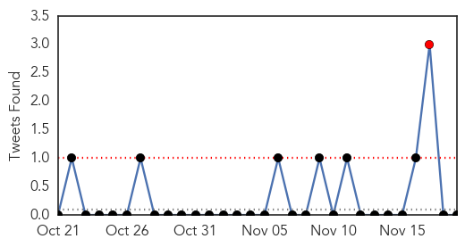

30 Day Trends
Web: 0 alerts, 0 warnings
Twitter: 1 alerts, 0 warnings
Top Articles:
- 0.995
- This year’s flu vaccine less effective than previously thought
- 0.977
- Evidence of probable transmission of bird flu virus between two unrelated individuals
- 0.962
- Flu-Fighting Tips for Home and Work
- 0.930
- Toledo-Lucas County Health Department hosts flu clinic Thursday
- 0.919
- Evidence of probable transmission of bird flu virus between two unrelated individuals
- 0.752
- Chicken resistant to avian flu will emerge: WHO expert
- 0.751
- November 19, 2015 Archives
- 0.751
- November 19, 2015 Archives
- 0.751
- November 19, 2015 Archives
- 0.751
- November 19, 2015 Archives
- 0.751
- November 18, 2015 Archives
- 0.751
- November 18, 2015 Archives
- 0.751
- November 18, 2015 Archives
- 0.751
- November 18, 2015 Archives
- 0.733
- KUNA : Two die from seasonal flu
- 0.573
- JMIR-Forecasting the Incidence of Dementia and Dementia-Related Outpatient Visits With Google Trends: Evidence From Taiwan
Top Tweets:
-
No tweets found for Nov 19, 2015
Web/News Articles

Tweets
Article Locations